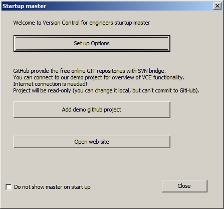
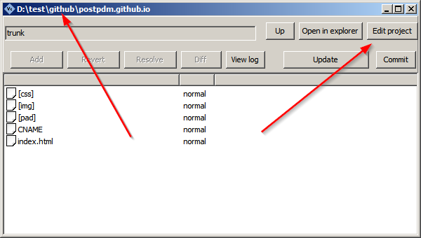
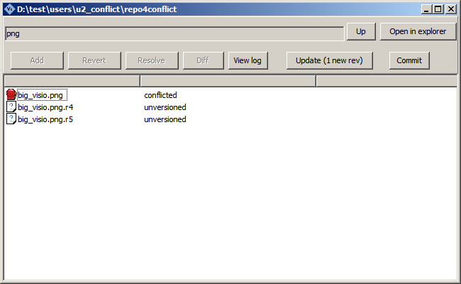

Release history and site news
Version 0.22
Previous version of VCE contain "Type URL to your repository" text field in "Add project dialog". This is a first step in application usage, and it could be unclear for common users - because you need to know URL to your repo. This taks is described in doc, but best solution should not to require for documentation to use it. That's why we improve this step.
- If you have local SVN repo on your PC or LAN - you can select path with simple "Select directory" dialog
- If you have GitHub account - you can fetch all your repo from GitHub linked with your user name (or names)
We hope this improvements could low of learning curve for our application for new users and bring a new experience for you.
Version 0.21
Fixed bug:
- Fixed error in EPS (Encapsulated PostScript) files diff view
CAD diff v 1.4 release
New release of CAD Diff - visual comparison for CAD files. Added KOMPAS Graphic CDW support.
Version 0.20
New features:
- Diff view for CDW (KOMPAS Graphic CAD) files (via KOMPAS, you need to have KOMPAS installed).
CAD diff v 1.3 release
New release of CAD Diff - visual comparison for CAD files. Added trim operation for image edges erasing - you can use it for ease comparing the technical drawings.
CAD diff v 1.2 release
New release of CAD Diff - visual comparison for CAD files. Added dual file select dialog (if no command line provided).
Version 0.19
New features:
- Configuration for external diff tool for each file type (by extension)
- Set the interface font with any size
.png)
CAD diff v 1.1 release
New release of CAD Diff - visual comparison for CAD files. Fixed bug with command line arguments - now you can use the related paths to compared files.
CAD diff First release
First release of new tool - CAD Diff - visual comparison for CAD files.
Version 0.18
New features:
- First version of DWG and DXF visual diff (via MS Visio, you need to have MS Visio installed). Read the doc...
- Read the list of repo available from XML-catalog. Read the doc...
Enhancements:
- Many little visual improvements in interface (in commit dialog, lists, logs...)
Version 0.17
Enhancements:
- More smooth interface with image toolbars.
- Filter by project path/url in main window.

Version 0.16
New features:
- List of known urls in drop-down list in New checkout dialog.
- Exporting of compared picture in Image Diff window.
- Test button for external diff tool now generate the temporary text file pair for running tool.
- Default commit message in Options.
- Support for portable mode. Read full overview in Portable distributive article.
Fixed bug:
- Checking for missed required comment in commit dialog.
Version 0.15
New features:
- MS Visio (if installed) document comparison for .vsd .vdx and .vdw files in Diff and Resolve commands (with page synchronization).

Version 0.14
New features:
- MS Word (if installed) document comparison for .doc and .docx files in Diff and Resolve commands
- New "Copy full path to clipboard" command in file list
Visio2image first release version 1.0
First release of new tool - Visio to image batch converter.
Version 0.13
Enhancement:
- New option in StartUp dialog - Add new project.
- StartUp dialog could be switched back in Options dialog.
- Visual diff and comparison support are tested for Photoshop Document PSD images.
Fixed bug:
- In diff operation for big files user can press diff for many times while View diff dialog is preparing - fixed.
- If calling the external diff program, based file is not protected - fixed.
- Can't visual compare the Truevision TGA and Portable PixMap PPM images - fixed.
Version 0.12
New features:
- Internal image diff and comparison for SVG (Scalable Vector Graphics) and JPEG2000 (jp2) formats
Enhancement:
- More stable working with URL and checkout paths with special and national characters
Fixed bug:
- Disabled auto merging for text and XML files, which corrupt the file with merge markers
New online SVN hosting tested - Assembla
We have done our testing of another one free online hosting for your hardware projects - Assembla. Read full overview in Online repository hosting, tested with VCE article. Now Assembla, Sourceforge, GitHub and RiouxSVN are tested.
Version 0.11
Enhancement:
- New StartUp master with simple connection to free GitHub demo repository

Version 0.10
Enhancement:
- Conflict resolver improved - now preserve the extensions for revision files in case of update conflict
Version 0.9
Fixed bug:
- Fixed CRITICAL bug - can't start svn functions if installed to path with space bars in file names. Please, update!
New features:
- Image compare (for common image formats) in Diff and Resolve dialogs, highlight changes, diff view with scroll synchronization
Version 0.8
Enhancements:
- New installer with uninstaller option.
- Add (add file to control) button renamed to Stage.
- Edit project credentials dialog improved.
Version 0.7
Enhancement:
- New Edit credentials option for project working copy. Now you can set up the user name and password for any existing project.
Fixed bug:
- Fixed bug with server authorisation
- Screen position for Image diff dialog now saves for new session.
- If repo url contain / char, can't calculate destination folder for working copy.

Version 0.6
Enhancement:
- Revert operation now send modified file to Windows trash bin before replace it with server version.
Version 0.5
New features:
- Icons for indicating of file state (unversioned, missed, modified...) in project window.
- View log function now work faster.
- Dual overview of common image formats in Diff and Conflict resolver dialogs.

Version 0.4
Fixed bug:
- Fixed error with files with national characters in file name.
Version 0.3
New feature:
- Call the external Diff\Diff3 utility in conflict resolver dialog.


Version 0.2
New features:
- Monitor repositories for new commits
- Context menu in file list.


Version 0.1
First release.